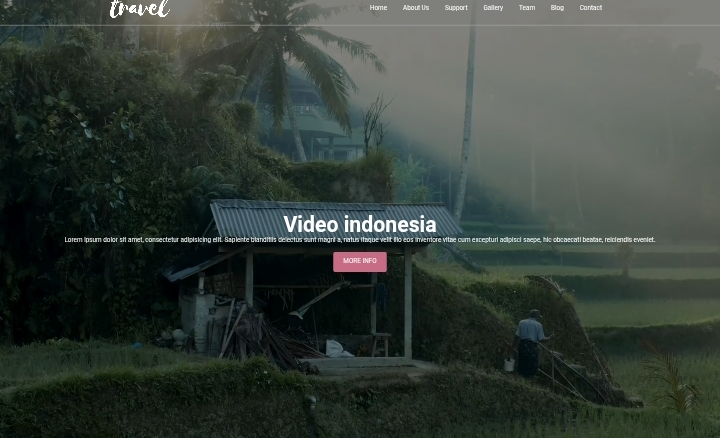

Travel Website
Website bertema perjalanan dan pariwisata yang saya buat untuk menampilkan destinasi Indonesia dengan visual yang menarik dan navigasi yang sederhana.

Website Pariwisata
Membuat tampilan website bertema travel yang dapat digunakan untuk memperkenalkan destinasi dan memberikan pengalaman visual yang menarik kepada pengunjung.
HTML & CSS
Project dibuat menggunakan HTML dan CSS dengan fokus pada layout, tipografi, navigasi, gambar, dan tampilan halaman yang responsif.
UI & Frontend
Saya membuat struktur halaman, navigasi, hero section, penggunaan gambar, typography, serta styling tampilan website.
Visual Travel
Menggunakan gambar pemandangan sebagai fokus utama untuk membangun suasana perjalanan dan memperkuat tema pariwisata Indonesia.